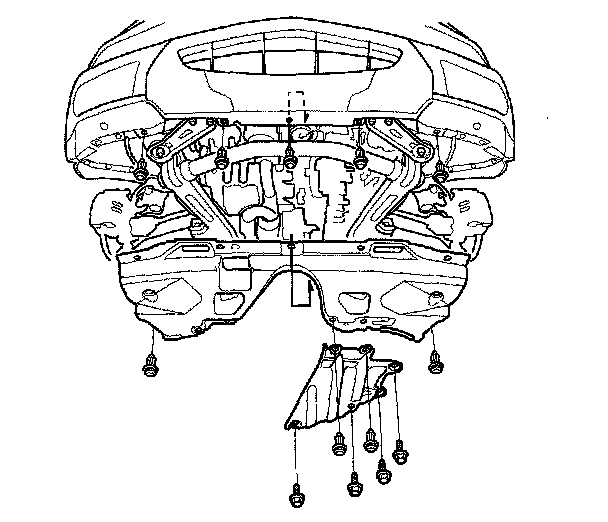
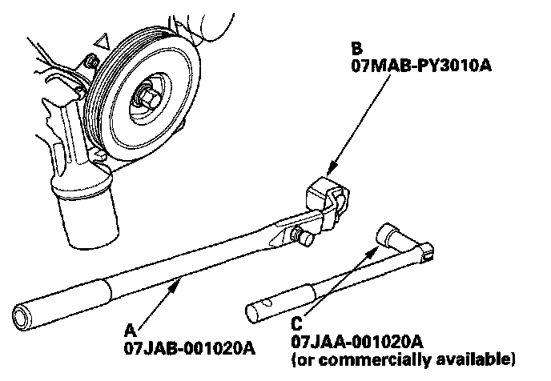
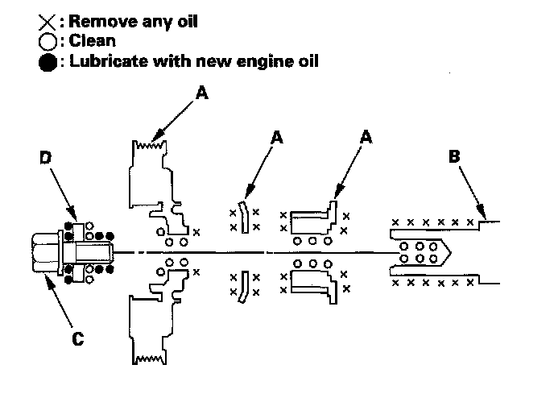

Harmonic Balancer - Crankshaft Pulley: Service and Repair
Crankshaft Pulley Removal and InstallationSpecial Tools Required
^ Holder handle 07JAB-001020A
^ Holder attachment, 50 mm, offset 07MAB-PY3010A
^ Socket, 19 mm 07JAA-001020A, or a commercially available 19 mm socket
Removal
1. Remove the right front wheel.
2. Remove the splash shield.

3. Remove the drive belt.
4. Hold the pulley with the holder handle (A) and holder attachment (B).

5. Remove the bolt with a heavy duty 19 mm socket (C) and breaker bar, then remove the crankshaft pulley.
Installation
1. Remove any oil and clean the pulleys (A), crankshaft (B), bolt (C), and washer (D). Lubricate with new engine oil as shown.

2. Install the crankshaft pulley, and tighten the bolt. Do not use an impact wrench.
-1 Hold the pulley with the holder handle (A) and holder attachment (B). Torque the bolt to 65 N-m (6.5 kgf-m, 47 lbf-ft) with a torque wrench and heavy duty 19 mm socket (C).
-2 Mark the bolt head (D) and crankshaft pulley (E) as shown, then tighten the bolt an additional 60° (The mark on the bolt head lines up with the mark on the crankshaft pulley).

3. Install the drive belt.
4. Install the splash shield.
5. Install the right front wheel.